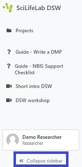
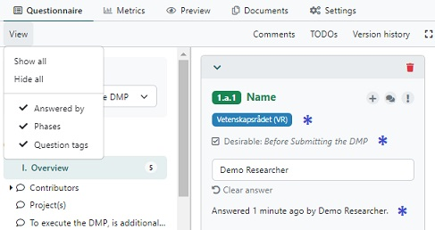
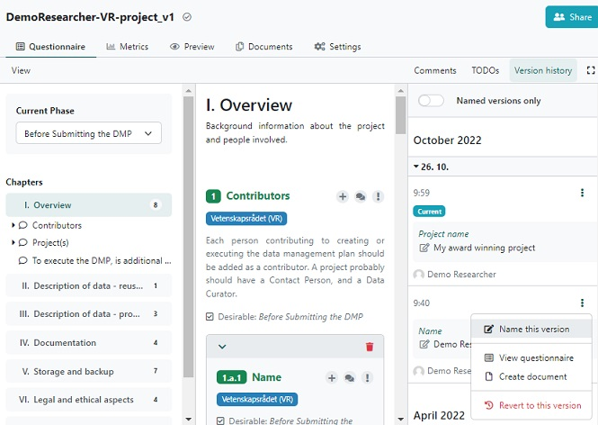

There are some additional functionality incorporated into the Data Stewardship wizard,
which can be very handy to know about:
The wizard can take up a lot of space on your screen, and by clicking on Collaps
sidebar more space is released while working inside a Project.

To further free up some space on your screen, there is a Zen mode
functionality, accessible on the right in the features bar. Click and unclick
to show / hide panels and views.
Also information around the questions can be shown or hidden, using the View
tab in the features bar. You can hide tags, phase, and who answered when, repectively.

If the document type is set to PDF or HTML in Settings, the Preview
tab in the navigation bar allows you to see what the output document will look like, without having
to download it first.
All changes made to a questionnaire are saved automatically, and the Wizard has a version
control functionality which is accessible via the Version history tab in the
features bar. The versions are sorted by date, with the current one first. By clicking on
the three vertical dots next to a version, you have e.g. the possibility to name that version
(for future easy access), and to revert to this version (in case some errors were
introduced in the current version that you regret). To hide the versions, click on the
Version history again.
